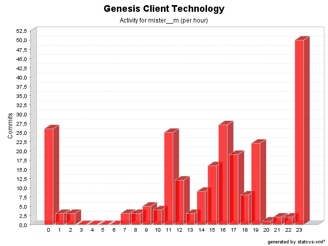

| Login: mister__m Fullname: mister__m Revisions: 243 Lines of Code: 6999 Added Lines of Code: 8682 Lines of Code per Change: 28,8 |

| Date | Author | File/Message |
|---|---|---|
| 07/08/06 18:27 | mister__m | All constants prefixed with genesis: and inconsistency fixed.
(1 Files changed,
21 Lines changed) src/net/java/dev/genesis/ui/swing/SwingBinder.java 1.10
(+21
-19)
|
| 07/08/06 18:23 | mister__m | Stylistic changes
(1 Files changed,
7 Lines changed) src/net/java/dev/genesis/ui/swing/components/JTableComponentBinder.java 1.6
(+7
-5)
|
| 07/08/06 14:18 | mister__m | Formatting changes and registry made final
(1 Files changed,
33 Lines changed) src/net/java/dev/genesis/text/FormatterRegistry.java 1.5
(+33
-34)
|
| 07/08/06 13:09 | mister__m | Refactored method missing in 1.4
(1 Files changed,
11 Lines changed) src/net/java/dev/genesis/ui/swing/components/JListComponentBinder.java 1.8
(+11
-5)
|
| 07/08/06 12:58 | mister__m | Removed redundant code
(1 Files changed,
0 Lines changed) src/net/java/dev/genesis/ui/thinlet/BaseThinlet.java 1.38
(+0
-5)
|
| 13/04/06 11:26 | mister__m | Missing copyright for 2006
(1 Files changed,
1 Lines changed) src/net/java/dev/genesis/ui/controller/DefaultFormController.java 1.35
(+1
-1)
|
| 13/04/06 11:23 | mister__m | Improved error message for a @DataProvider that returns null (issue # 341)
(1 Files changed,
11 Lines changed) src/net/java/dev/genesis/ui/controller/DefaultFormController.java 1.34
(+11
-0)
|
| 06/04/06 11:20 | mister__m | Improved error message for classes which don't implement ViewMetadataFactory
(1 Files changed,
3 Lines changed) src/net/java/dev/genesis/helpers/TypeChecker.java 1.4
(+3
-2)
|
| 04/04/06 18:27 | mister__m | Missing copyright for 2006
(4 Files changed,
4 Lines changed) src/net/java/dev/genesis/ui/binding/AbstractBinder.java 1.3
(+1
-1)
src/net/java/dev/genesis/script/el/ELScriptContext.java 1.6
(+1
-1)
src/net/java/dev/genesis/script/bsf/BSFScriptContext.java 1.5
(+1
-1)
src/net/java/dev/genesis/script/jxpath/JXPathScriptContext.java 1.5
(+1
-1)
|
| 28/03/06 16:18 | mister__m | hasChanged fixed for other scripting languages (issue # 334)
(9 Files changed,
22 Lines changed) src/net/java/dev/genesis/script/el/ELScriptContext.java 1.5
(+1
-5)
src/net/java/dev/genesis/script/ScriptContext.java 1.3
(+0
-9)
src/net/java/dev/genesis/script/ScriptFunctionsAdapter.java 1.3
(+2
-3)
src/net/java/dev/genesis/script/DynamicProxy.java 1.2 removed src/net/java/dev/genesis/script/ScriptUtils.java 1.4
(+16
-13)
src/net/java/dev/genesis/script/bsf/BSFScriptContext.java 1.4
(+3
-12)
src/net/java/dev/genesis/script/jxpath/JXPathScriptContext.java 1.4
(+0
-4)
src/net/java/dev/genesis/script/ScriptableObject.java 1.2 removed src/net/java/dev/genesis/script/ScriptableObjectImpl.java 1.2 removed |